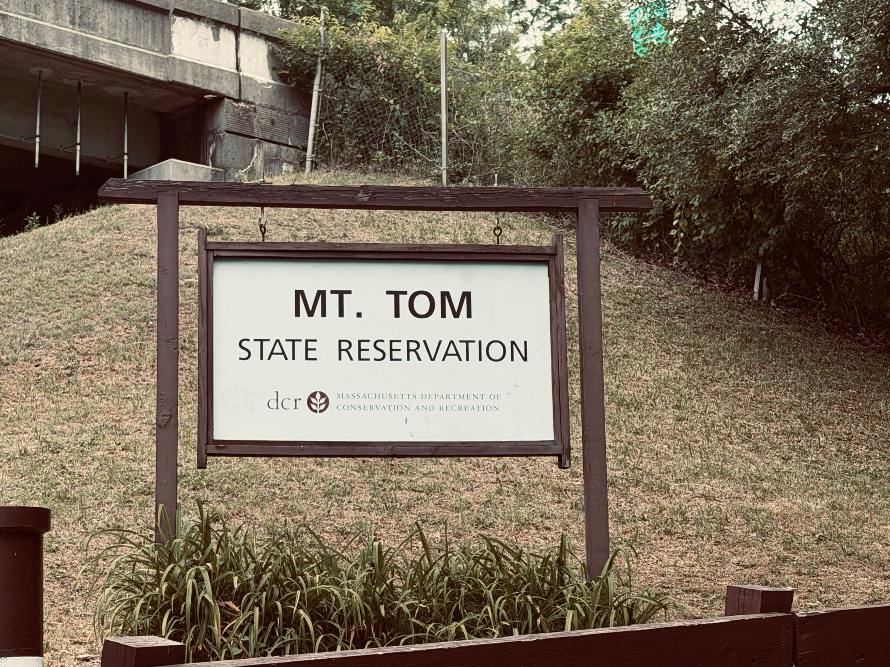

Hampden County Mesh is a local communications community for people interested in mesh networking, radio, practical infrastructure, field notes, and learning how to communicate when ordinary systems are limited, unavailable, or simply not the right tool.
Hampden County Mesh is for local people who want to learn, experiment, build, document, and share practical communications knowledge.
The community is centered around mesh networking and radio, especially MeshCore and LoRa-based systems, but it also welcomes people interested in Meshtastic, FRS, GMRS, MURS, CB, Amateur Radio, antennas, local coverage, emergency preparedness, and practical field use.
You do not need to be an expert to participate. Asking beginner questions, bringing a node along, checking what connects, sharing what you notice, or helping someone else learn the basics all count.

Hampden County has dense neighborhoods, rural edges, old industrial buildings, wooded hills, river corridors, hospitals, schools, highways, and public gathering places. Radio coverage is shaped by all of that.
A useful local mesh is not just a pile of devices. It is people learning what works, where it works, what fails, and how to make that knowledge easier for others to use.
That can be as simple as checking whether a node connects from a park, documenting a good antenna setup, helping someone flash a device, or sharing a note about a dead spot.
Explain mesh networking, radio services, nodes, repeaters, observers, antennas, and coverage in plain language.
Read the guides →Bring nodes and radios into real places, see what connects, and share useful notes without making participation feel like homework.
View coverage →Keep track of nodes, antennas, firmware, power, placement, and lessons learned so others can build on what works.
Document a node →Work toward public guides, maps, status pages, community tools, local observers, and practical communications capacity.
View roadmap →People who are curious but new to radio, mesh networking, antennas, firmware, Linux, or local communications.
Amateur Radio, GMRS, CB, FRS, MURS, and scanner listeners who want to compare notes and help people understand practical radio use.
People interested in devices, batteries, solar power, antennas, enclosures, mapping, logging, dashboards, and field setups.
Libraries, clubs, schools, makerspaces, neighborhood groups, and local organizations interested in hosting future learning sessions.
Hampden County Mesh is not an emergency service, not a replacement for 911, not an official public safety system, and not a guarantee of coverage during an outage.
It is a community effort to build useful local options: practical skills, shared documentation, field-tested coverage knowledge, and communications tools that can help people coordinate when ordinary systems are unavailable, overloaded, or inconvenient.
The network will become more useful as more people learn, test, host, document, teach, and maintain pieces of it.
Start small. Read a guide, ask a question, bring a node somewhere, share a casual coverage note, document a setup, or suggest a place where a future radio basics or mesh networking session could happen.
The goal is not to make everyone an expert before they participate. The goal is to help people learn by doing.